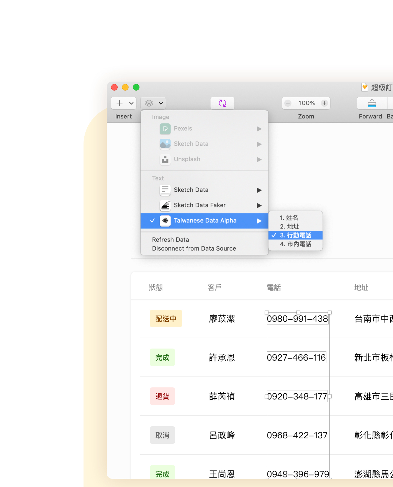
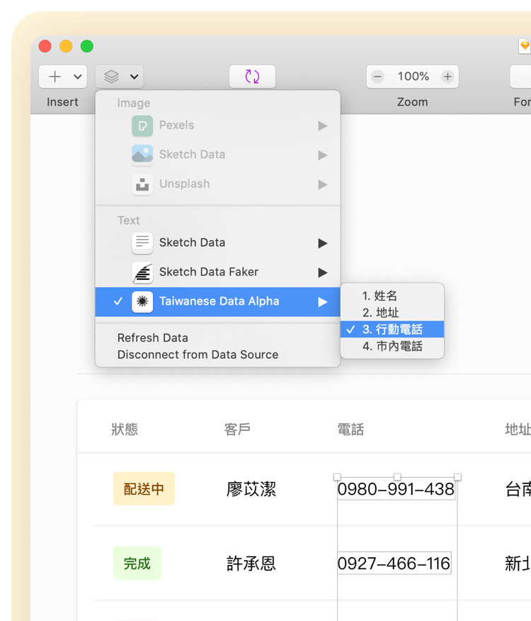

說明
下載 Beta 測試版
Sketch 擴充套件
用隨機
產生
的
台灣
在地
虛構
資料
來豐富
妳
的
設計
為設計稿加入各項精心編製、深具說服力的台灣在地隨機資料，使設計稿更加可信，提升設計完成度。
下載 Beta 測試版
學習如何使用
 
地址
真實的縣市、鄉鎮區，配上隨機的虛構道路和門牌號碼。這些地址由特別調配過的機率來產生，使結果變化多端。
全自動產生
道路會是「路」還是「街」？有沒有「巷」或者「弄」？每一次產生的結果都不盡相同，也因此使得地址自然又親切。
個人化
親自指定縣市和區域，並自動產生剩下的。輕鬆應付各種使用場合。
了解如何使用
電話號碼
囊括了全國所有地區的電話號碼，包括行動電話和市內電話。這些電話號碼嚴格遵循各地編碼規則。
行動電話
產生時就會帶入連接號。不需額外處理，即可立刻在設計稿中加以運用。
市內電話
號碼產生的機率經過調配，人口越多的地方出現的機率越高。號碼連接號更符合各地使用習慣。
個人化
親自指定電話區碼，並交由套件產生完整號碼。
了解如何使用
姓名
由精心挑選的 38 組姓氏和 71 組名字隨機組合搭配，帶來 2,698 種可能性。這些可都是實實在在的台灣在地姓名。
姓氏
收錄了 38 組日常生活中相當常見的姓氏，人人都能從中感覺到幾分熟悉親切。
了解會產生的姓氏
名字
收錄了 71 組 21 世紀的台灣常見名字，男性化和女性化的都有。這些名字正是我們這年代的風貌。
了解會產生的名字
開始使用台灣資料
Beta 測試版現已開放參與
下載 Beta 測試版
學習如何使用
該如何稱呼您？
請選擇最適合您的性別。網站會依照您的選擇來稱呼您。
瞭解了，謝謝
妳
妳
可以隨時在網頁最底部的「更改
妳
的多性別選項」內，重新選擇
妳
的多性別選項。
妳
可以隨時在網頁最底部的「更改
妳
的多性別選項」內，重新選擇
妳
的多性別選項。
更改
妳
的多性別選項
重新選擇最適合您的性別。網站會依照您的選擇來稱呼您。
女性
男性
開始瀏覽網站
完成